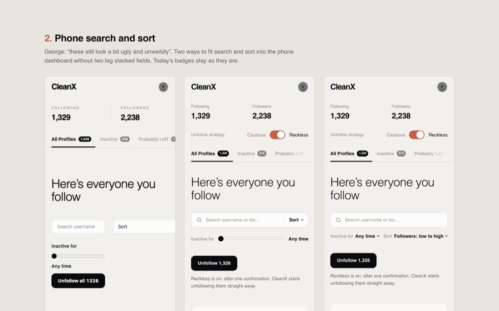
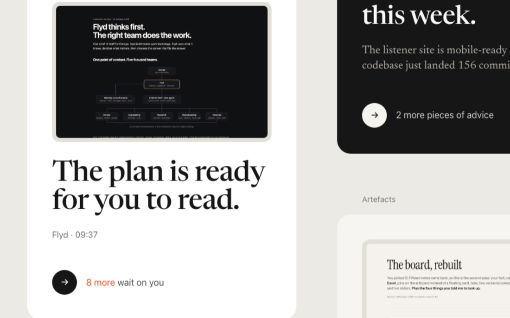
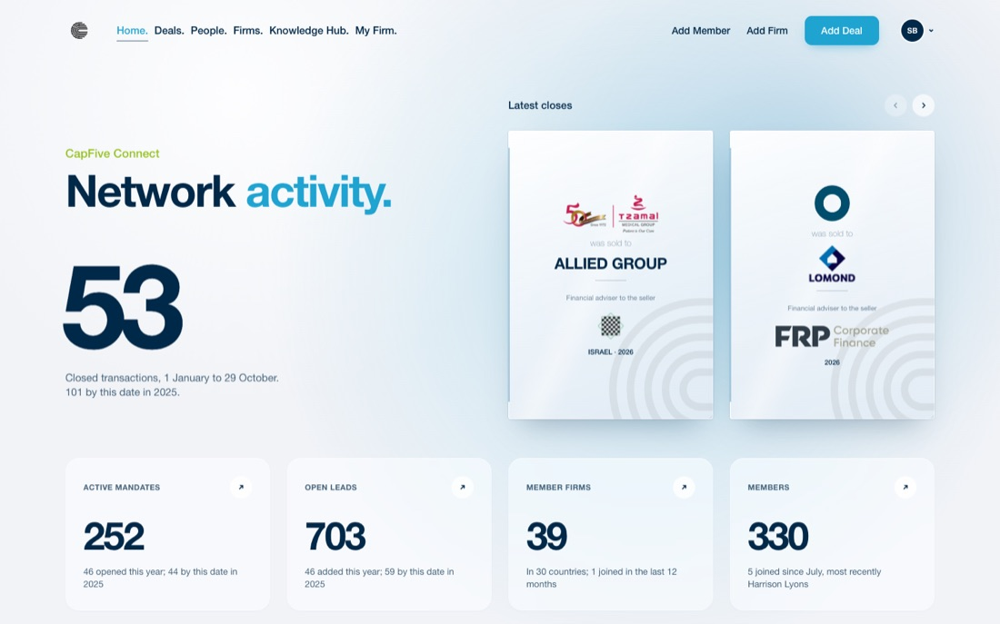
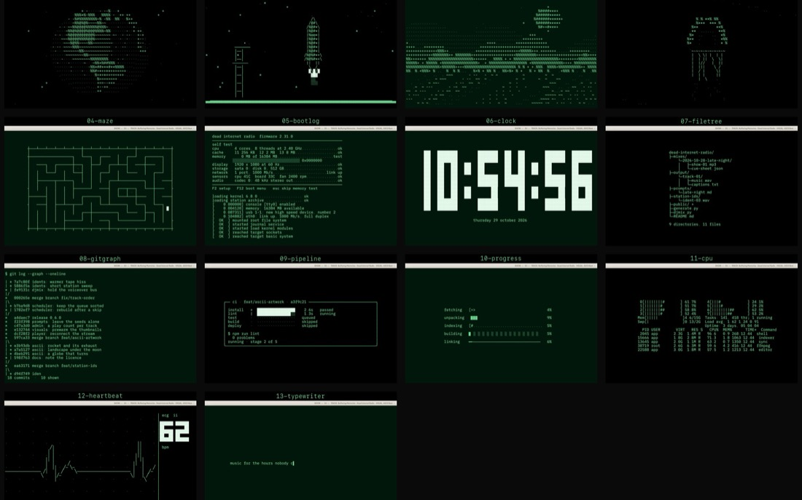
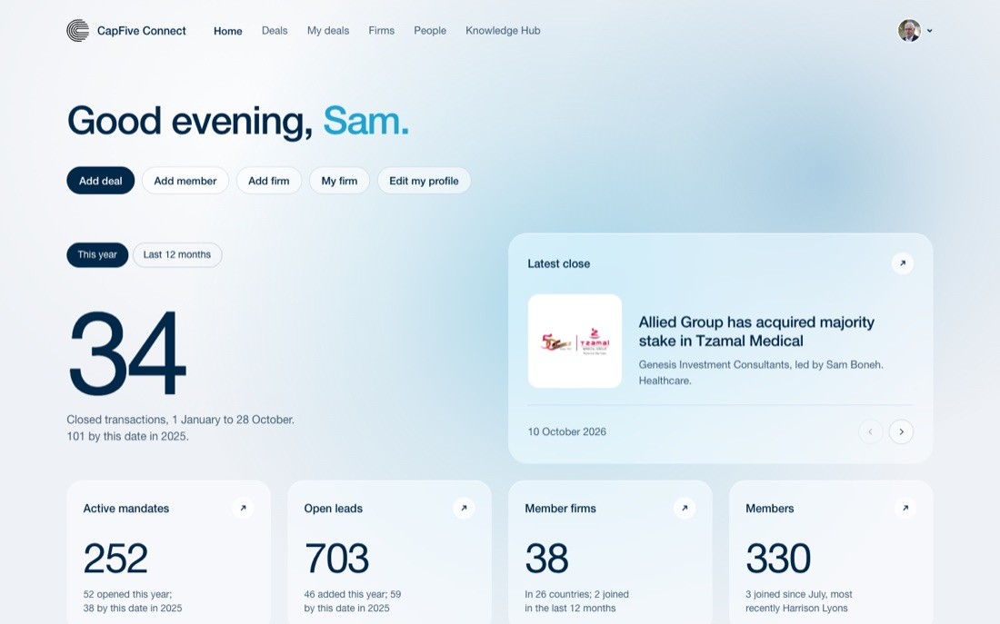

Caught Flyd saying nothing is running while four jobs run
Flyd · showing live work · 8 min
Four running.
Six need you.
Thursday 12:20 · five landed this morning
Caught Flyd saying nothing is running while four jobs run
Flyd · showing live work · 8 min

Photographed the schedule page before changing it
DIR · a lighter, easier admin · 8 min

Photographed the inactive-accounts view and the empty queue
CleanX · five approved fixes · 32 min

Made frames scroll inside the review board
Easel · board mode · 19 min

Pick directions for search, pricing and credit packs
CleanX · waiting 9 min · seven designs

Which front-page fixes ship?
CapFive · waiting 10 min · ten ranked fixes

Right-column cards, set as type
Flyd · waiting 24 min · ready to land

Three calls on round 5
CapFive · waiting 29 min · source, heading, captions

ASCII artwork scenes
DIR · waiting 1 h 21 min · ready to land

Notes on the V1 member dashboard
CapFive · waiting since Wednesday

CleanX mobile hero, left-aligned 11:21

Flyd decision cards show their designs 10:22

Flyd's wider right column 09:51

DIR artwork switches in admin 09:15